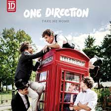
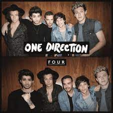
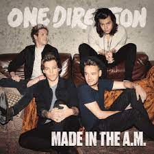

One Direction’s debut album is titled Up All Night. It was first released in November 2011 by Syco Records in Ireland and the United Kingdom. It was later released by Columbia Records in North America. The album came in a variety of formats, ranging from the normal thirteen songs to special copies featuring 18 songs. With their debut album, One Direction became the first British band to debut at number one in the United States, a Guinness World Record that they still hold as of 2016.
Up All Night album cover.
Take Me Home was the fourth best-selling album of 2012, reaching number one in more than 35 countries and selling over 4 million copies. For this album, One Direction began writing songs more extensively, with each band member receiving several writing credits on various tracks. Primary recording began in Stockholm, Sweden, in May 2012. While finishing the final leg of their Up All Night Tour, the band also recorded part of the album in the United States. Niall told MTV News in June 2012 that they planned to spend July and August "getting the album done."
Take Me Home album cover.
One Direction’s third studio album is titled Midnight Memories. It was released on November 25, 2013, with pre-orders beginning on September 9, 2013. It topped the charts in over 90 nations, including the United Kingdom and the United States. While on their second world tour, the Take Me Home Tour, One Direction began production on their third studio album. The album’s release coincided with the announcement of the band’s third world tour, the Where We Are Tour. The record is "rockier," according to Louis. On July 2, 2013, the album’s track listing was leaked.

Midnight Memories album cover.
One Direction’s fourth studio album is titled Four. On November 17, 2014, it was released. Four was the band’s first critically lauded album, reaching number one in 67 countries. One Direction became the first band in history to have all four albums chart at number one as it debuted at number one in the United States once more. It was the ninth best-selling album in the United States in 2014, and over 3.2 million copies have been sold globally since then. Billboard reported on August 13, 2015, that the album had sold over a million copies in the United States. Four was certified double platinum on September 18, 2015, according to bpi Music.
Four album cover.
One Direction’s next album, Made in the A.M., is their fifth studio album. On November 13, 2015, their debut album without Zayn Malik was released globally. With 2.4 million copies sold globally, Made in the A.M. was the sixth best-selling album of 2015. The album was certified platinum by the Recording Industry Association of America (RIAA) in April 2016. It is the first One Direction album to not chart at number one, peaking at number two on the Billboard 200. It was their final album before going on a "indefinite break" at the start of 2016.
Made In The A.M. album cover.